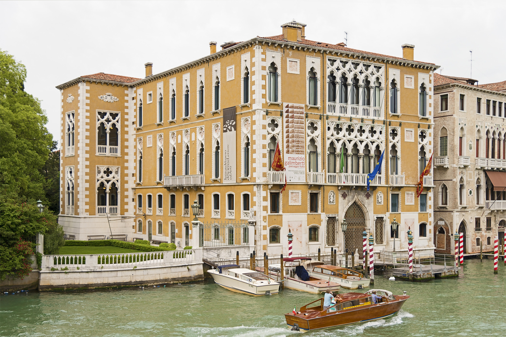

Living systems are characterized by the emergence of recurrent dynamical patterns at all scales of magnitude. Self-organized behaviors are observed both in large communities of microscopic components - like neural oscillations and gene network activity - as well as on larger levels - as predator-prey equilibria to name a few. Such regularities are deemed to be universal in the sense they are due to common mechanisms, independent of the details of the system. This belief justifies investigation through quantitative models able to grasp key features while disregarding inessential complications. The attempt of modeling such complex systems leads naturally to consider large families of microscopic identical units. Complexity and self-organization then arise on a macroscopic scale from the dynamics of these minimal components that evolve coupled by interaction terms. Within this scenario, probability theory and statistical mechanics come into play very soon.
The aim of this conference is to bring together scientists with different backgrounds (maths, biology, physics and computing, theoreticians along with experimentalists), interested in macroecology, microbial ecology and evolutionary biology, to discuss important and recent research topics in these areas as well as exchange methods and ideas. The style of the conference will purposely be informal so as to encourage discussions.
List of topics
- Stochastic population dynamics
- Quantitative and system biology
- Microbial ecology
- Statistical mechanics models in ecology
- Robustness and adaptability of ecosystems
- Evolution in microbial communities
- Biodiversity , coexistence and species interactions
- Microbial metabolism and cross feeding
